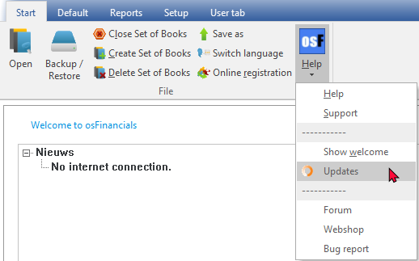
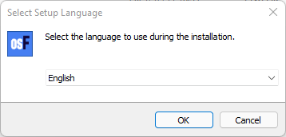
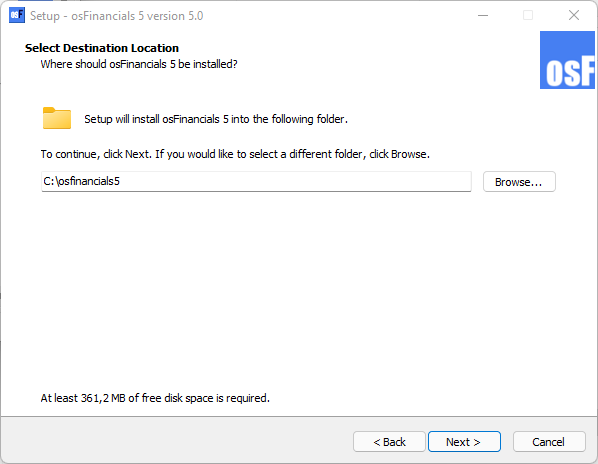
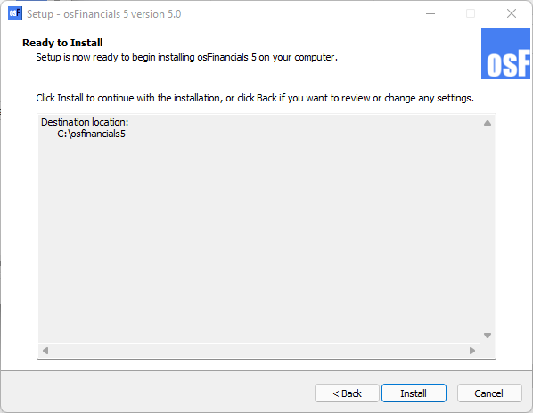
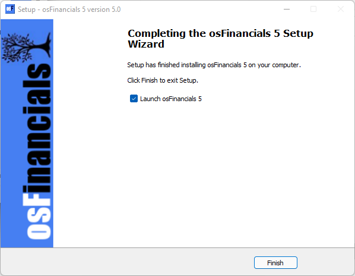

Install osFinancials 5 - Updates (Manually)
osFinancials 5 Business Class
Installation files / changelog link : osFinancials-Turbocash-Business-version
|
|
It is important to make a backups of your Set of Books. It is strongly recommended that you make a backup copy of the entire installation folder of your existing installation osFinancials5 before proceeding with the update. |

|
|
The Updates option may manually be launched from Help → Updates (Start ribbon). The Update option will list all the installation files available for download. By default, the Update will be launched when starting osFinancials5. To disable the check for update at start, select this field and remove the tick.  |

To Install osFinancials5 Updates from a downloaded file
- Once the osFinancials5 Update installation file is downloaded, select the file and open it. The "Select Setup Language" screen is displayed:

|
|
The default installation language is set to English. "Nederlands" language is also available to launch the osFinancials5 install options. |
- Select your country and language and click OK. The "License Agreement" screen will be displayed.
- Please read the agreement carefully. If you agree with the terms and conditions of the licence agreement, select the “I accept the agreement” option and click Next. The "Select Destination Location" screen is displayed:

|
|
The default path is C:/osFinancials5 on your system's default drive. This should be the same folder in which the Full version of osFinancials5 is installed.. |

- Once finished, click Next. The "Ready to Install" screen is displayed:
 - Please check the settings.
|
|
This is your last chance to change anything to be installed. If you are not satisfied with your selection, click on the Back buttons to change the Installation directory, or the Start menu folder or select / deselect the necessary options. |
- Click on the Install button. The osFinancials5 update installation process will start.
- Once the osFinancials5 installation process is finished, the "Completing the osFinancials 5 Setup Wizard" screen is displayed:

- Please select or deselect (remove the tick) to Launch osFinancials 5 - If this option is selected (ticked), the osFinancials5 program will automatically be launched, when you click on the Finish button.
- Once finished selecting or deselecting the necessary options, click on the Finish button. The osFinancials5 program will be started if you did not remove (deselect) the tick on the "Launch osFinancials 5" option.